Oi, eu sou o agente do futuro, seu mais novo informante sobre o paranormal. Eu criei esse site para espalhar informação e preparar vocês, meus telespectadores, para o apocalipse que está por vir. Aqui você vai ver histórias vividas por mim, e pesquisas também feitas por mim. Lembre-se, eles estão te observando, e querem que você não saiba disso, fique atento. Espero vocês nos meus próximos relatos. Ass: Agente do Futuro.
Muito bom dia, muito boa tarde e muito boa noite para todos os meus telespectadores. Aqui quem fala é o agente do futuro, mais uma vez registrando mais uma de minhas descobertas.
Hoje um morador da minha cidade foi atacado por um cachorro, mas não era apenas um cachorro, o animal foi modificado pelo governo por meios paranormais. O paranormal deixou o cachorro verde, isso mesmo minha gente, VERDE!! A pele, os pelos, tudo verde!! Eu tive que confirmar isso, ver se foi o paranormal, ou uma brincadeira de mau gosto. Mas eu tive a confirmação vendo os olho do bicho, eles brilhavam e rosa, azul e roxo.
O bicho era totalmente agressivo, me atacou só de me ver, mas eu consegui neutralizá-lo sem nenhuma complicação. Mais uma vez os trabalhado fazendo o trabalho do governo, que é potreger os outro trabalhado.
Infelizmente o cachorro era mãe de três cachórros. Eu só consegui resgatar um deles, e esse é o Billy, meu novo companheiro de investigação.
Voltando ao assunto principal, o paranormal afetou a criatura através de um vírus. O vírus transforma os infectados em criaturas bizarras, e esse cachorro estava em meio de uma transformação. Como o bicho foi neutralizado, acho que o vírus não ta mais circulando. Irei trazer atualizações sobre esse vírus, que eu tenho certeza que foi o governo que comprou, pra fazer outra pandemia, como a do COVID-19, pra deixar o povo na miséria, e beneficiar os farmacêuticos.
É isso, espero vocês no meu próximo relato, boa noite.